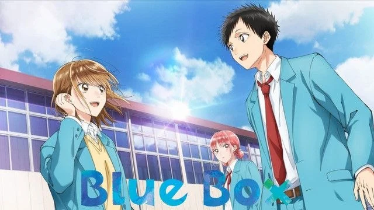
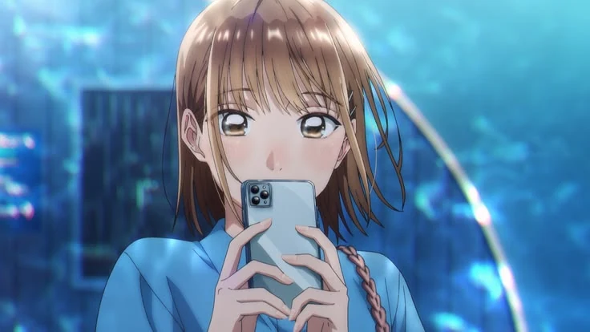
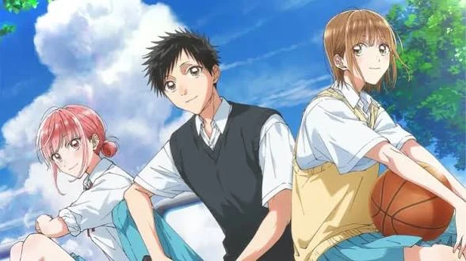
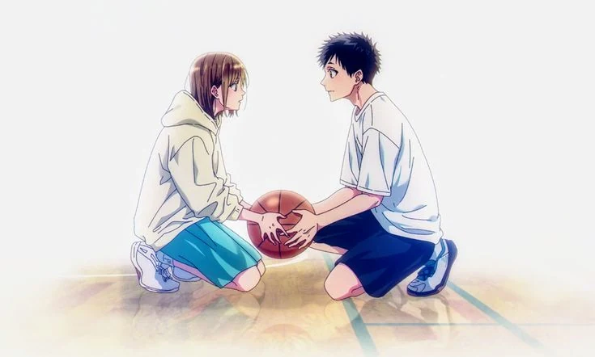
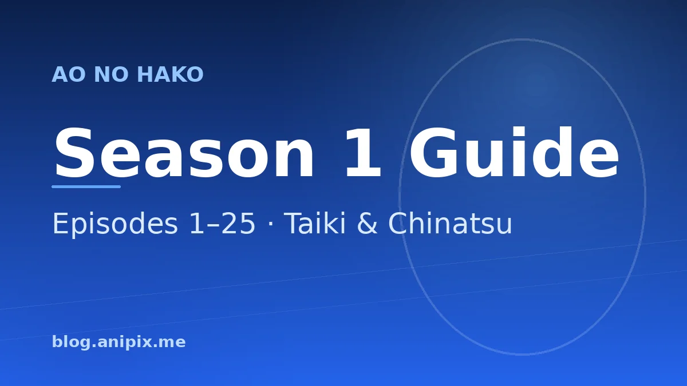

Blue Box Season 1: Complete Episode Guide (All 25 Episodes Explained)

Last updated: 25 October 2026
Blue Box — known in Japan as Ao no Hako — is a romance and sports anime adapted from Kouji Miura's manga. Its first season ran for 25 episodes across two cours, airing from October 2024 to March 2025 on TBS and streaming worldwide on Netflix. This guide walks through every single episode of Season 1 in order, with what happens, why it matters, and what the show is doing underneath.
If you have not started yet, a quick warning: this page is a full recap and contains spoilers for the entire first season.
At a glance
- Episodes: 25 (two cours)
- Aired: 3 October 2024 – 27 March 2025
- Studio: Telecom Animation Film (planned and produced by TMS Entertainment)
- Director: Yuichiro Yano
- Streaming: Netflix, worldwide
- Source: Kouji Miura's Blue Box manga (Shueisha, Weekly Shonen Jump)
- Season 2: premiered 4 October 2026
What Blue Box is actually about
On paper, the premise is a rom-com. Taiki Inomata is a first-year badminton player who gets to the gym early every morning to watch Chinatsu Kano, the second-year ace of the basketball team, practise alone. When Chinatsu's family has to move abroad, an old friendship between their mothers means she ends up staying in the Inomata house — the boy with a crush and the girl he is crushing on, sharing a hallway, hiding it from the entire school.
What makes Blue Box worth 25 episodes is that it refuses to treat that setup as a joke or a gimmick. The show is far more interested in what it feels like to be sixteen and quietly serious about something. Taiki is not chasing a fantasy; he is trying to become good enough to stand in the same room as the person who inspired him to work harder. Chinatsu is not a prize; she is a competitive athlete with a goal of her own and a very real fear of losing it. The living arrangement is the hook. The discipline is the story.
The result is a romance that moves slowly on purpose. Blue Box is a show about two people being careful with each other, and almost all of its best moments are small: a scarf, a bracelet, a note left in a notebook, a nickname learned by accident. If you are looking for a fast, dramatic confession, this is not that show. If you are looking for one of the most honest portrayals of first love in recent anime, it is exactly that show.
Who is who
Taiki Inomata is the protagonist, a first-year badminton player with a stubborn streak and almost no self-pity. He is not naturally gifted. He is the kind of character who fixes things by doing them a thousand times, and the season is careful to show the cost of that — he trains until he is sick, he loses repeatedly, and he measures himself against people better than him without ever getting bitter about it.
Chinatsu Kano is the second-year basketball ace and the emotional centre of the show. She is composed, capable and used to being depended on, which is exactly why the season spends so much time taking that composure apart. Chinatsu's arc is not about falling for Taiki; it is about admitting that she has, and working out what that costs a person who has organised her whole life around one goal.
Hina Chono is a first-year gymnast, Taiki's friend and the third point of the triangle. She is the most transparently written character in the show and the one the series treats most gently. Hina's feelings arrive slowly, she understands them before Taiki does, and she never once tries to win by making anyone else lose. She is also carrying real pressure of her own in her sport, and Blue Box gives her that life rather than defining her entirely by her crush.
Kyo Kasahara is Taiki's closest friend and the quiet engineer of the entire first season. He is the one who tells Taiki to keep the living situation secret, the one who arranges the aquarium outing, and the one who asks the questions nobody else will. He is the best-written supporting character in the show.
Kengo Haryu is Taiki's badminton senior, a talented doubles player who spends the first few episodes seeming like a rival and turns out to be something much more useful: a mentor who teases Taiki mercilessly and then gives him genuinely good advice. His girlfriend Karen becomes important later in the season, and the two of them function as a portrait of what a relationship between two athletes actually looks like.
Ayame Moriya is Hina's friend, a comic presence for most of the season who becomes an active agent in its final stretch, and Nagisa Funami is Chinatsu's basketball teammate. Together with Hina and Kyo they make up a supporting cast that feels like a real group of teenagers rather than a set of functions.
Staff, studio and music
The first season was directed by Yuichiro Yano, with Yuko Kakihara handling series composition and screenplay, and Miho Tanino serving as chief animation director and character designer. It was planned and produced by TMS Entertainment with animation production by Telecom Animation Film. The direction is one of the season's strengths: Blue Box is not a flashy show, and it does not try to be, but it has a very consistent eye for faces, for hands, and for the small physical details of two people being nervous around each other.
The music changes at the halfway mark, which gives each cours its own identity. The first cours opens with “Same Blue” by Official Hige Dandism and closes with “Teenage Blue” by Eve. The second cours swaps in “Saraba” by Macaroni Empitsu and “Contrast” by Tomoo. All four are good; the first-cours pair in particular has become strongly associated with the show.
Season 1, episode by episode
Below is the full guide, in order, from the first morning at the gym to the finale.
Episode 1 — Chinatsu Senpai
Taiki Inomata is a first-year at Eimei High School who arrives at the gym before sunrise every single morning. It is not discipline that gets him out of bed. It is Chinatsu Kano, the second-year star of the girls' basketball team, who practises alone at that hour, and Taiki has spent months watching her from the far court without ever saying a word to her. When he finally admits the crush to his friends, the gymnastics ace Kyo Kasahara and the bubbly Hina Chono, they are honest with him in the way only close friends are: Chinatsu is the basketball club's ace, she is a year above him, and he is a badminton player nobody has heard of. They still coach him through a plan to at least break the ice.
The opening itself is gentle, and the show uses it to establish how Taiki actually feels. He is not chasing a fantasy; he is inspired. He tells Chinatsu that watching her keep practising after she missed the national qualifiers is the reason he started pushing himself harder at badminton, and it is the first honest conversation they have. Then a rumour lands: Chinatsu's family is moving abroad. Taiki sprints to the gym to say goodbye properly, only to discover the situation is more complicated than he assumed, and that Chinatsu has worked out an arrangement to stay in Japan.
The episode ends with the kind of twist that sets an entire series in motion. Taiki comes downstairs the next morning and finds Chinatsu at his own breakfast table. Because of a long friendship between their mothers, and because of the timing of her family's move, Chinatsu is going to be living in the Inomata house for the foreseeable future. The girl he has been quietly admiring from across a gym is now the girl who shares his home, and neither of them has any idea how to behave about it. It is a premise that sounds like a rom-com setup, and the series knows it. What makes Blue Box work is that it never treats the situation as a joke. It treats it as two teenagers being extremely careful with each other.
Episode 2 — You Have to Go to Nationals
Chinatsu settles into the Inomata household and Taiki spends most of the episode failing to act normal about it. His mood is so obviously different that Kyo notices immediately and gives him the advice that will shape the first half of the season: keep it a secret. Not out of shame, but because if the school finds out a second-year girl is living with a first-year boy, the gossip will swallow them both. Taiki takes the warning seriously, and it immediately creates the first crack in the arrangement, because being careful around someone is not the same as being honest with them.
What Taiki does instead is set himself a goal. If he wants to stand anywhere near Chinatsu, he decides, he has to reach the national tournament in badminton. It is a huge target for a first-year who is not yet on the level of his seniors, and Kyo is genuinely surprised by how seriously he means it. Chinatsu learns about the promise and, rather than laughing it off, gives him a good-luck bracelet, showing him the matching one she wears. It is a small gesture and a big one at the same time, and Taiki understands exactly what it means.
Hina, meanwhile, keeps running into Taiki training alone and starts teasing him about the reason. Frightened that she is closing in on the truth, Taiki does the worst possible thing and starts avoiding Chinatsu at school, then admits to her that he is worried about people talking. Chinatsu is confused by the distance, because she had assumed Taiki and Hina liked each other, and the misunderstanding does exactly what misunderstandings in this show always do: it forces both of them to think about what they actually want. The episode closes on a new problem. Hina and Taiki spot Chinatsu walking towards them, only for her to stop and start talking to Kengo Haryu, Taiki's badminton senior, and Taiki's stomach drops.
Episode 3 — Chii
Taiki is reassured that Haryu and Chinatsu are simply classmates, but reassurance does not survive contact with reality. He keeps seeing the two of them together, and then he hears Haryu call her 'Chii' with the easy familiarity of someone who has known her for years. Taiki tries to shut it out and focus on his upcoming matches, which works right up until his upperclassmen start joking about how much time Haryu and Chinatsu have been spending together. By the time Taiki is drawn against Haryu in a practice match, he is playing angry, and it shows.
The match is the first real badminton sequence in the series, and the show is careful about how it presents it. Taiki loses, but he plays better than anyone expected, including Haryu, and the way he loses matters more than the result. Afterwards Chinatsu finds him on the court and they practise together, and the tension he has been carrying all episode finally gets a name. He asks about the nickname, and learns that 'Chii' is simply what Chinatsu's classmates have always called her. Nothing has happened. Nothing was ever happening.
The second half of the episode is pure comedy, and it is the first sign of how well Blue Box balances its tones. Taiki is told he will be playing doubles with Haryu, which would be an honour if Haryu did not immediately hear him say Chinatsu's name and start teasing him relentlessly. Then Haryu introduces Taiki to his and Chinatsu's shared friend group, praises his skill to them, and lets him twist in the wind a little longer before the punchline arrives: Haryu has a girlfriend, and Chinatsu was helping him with something related to that. Taiki has spent two episodes building a rival in his head who never existed, and he is furious about it in the most teenage way possible. It is a small, funny, entirely human episode, and it quietly teaches Taiki the lesson he will keep learning all season: assume less, ask more.
Episode 4 — If He Wins
A month has passed and Taiki has settled into a routine of living with the person he has a crush on, which mostly means pretending he has not. The episode opens with a small, excruciating domestic incident: Chinatsu texts him because he accidentally walked off with her gym uniform, and the two of them have to navigate the handover like it is a hostage exchange. It is funny, and it is also the show quietly showing that they are becoming comfortable with each other in a way neither of them has noticed yet.
The real weight of the episode is Taiki's preparation for the badminton preliminaries. He practises at home late into the night, and Chinatsu notices. She tells him to take it easier, and then, trying to be kind, suggests he can always try again next year. It lands like a hammer. Next year Chinatsu will have graduated, and Taiki knows it, and the thought of chasing this goal without her in the building is enough to empty him out. Chinatsu realises her mistake almost immediately, and the scene where she talks about it with Taiki's mother, unaware that Taiki can hear, is one of the first genuinely tender moments of the series.
At the preliminaries, Taiki and Haryu start advancing, and then they run into Haryu's former doubles partner, Shoichiro Kishi. Kishi is annoyed that Haryu never gave him Chinatsu's number, and the two of them settle it the way teenage boys settle everything: with a challenge. Haryu accepts, then cheerfully hands the singles match to Taiki instead, because of course he does. Taiki is furious and also, by now, motivated. The episode ends on the morning of the match, with Kyo explaining to Chinatsu and her teammates exactly what is riding on it and how much of Taiki's drive traces back to her. Chinatsu does not say much. She does not need to.
Episode 5 — Aquarium
Taiki wins. The match against Kishi is the first time in the series that the badminton actually pays off, and the show lets it land, but it is more interested in what happens next. Kyo, who has been quietly steering events all season, suggests that Chinatsu take Taiki out to celebrate, and when Chinatsu actually offers, Taiki is so thrown that he agrees without thinking. Hina watches the exchange and congratulates him on getting closer to Chinatsu, calling the outing what it plainly is, a date. Her friend Niina Shimazaki notices something in Hina's face as she says it that Hina herself has not worked out yet.
The aquarium outing is the emotional centre of the episode. Taiki oversleeps and arrives in a panic, but the day itself is easy in a way their home life is not. Chinatsu apologises properly for discouraging him before the preliminaries, and Taiki, instead of brushing it off, tells her he is happy to listen whenever she is worried about something. It is a small line and it reframes the relationship: they are not just two people sharing a hallway anymore, they are two people who have decided to be a place the other can put things down.
Back at school, Kyo asks Taiki the question that has been sitting under the whole season: does he think Chinatsu might like him back? Taiki has no answer, and Kyo and Hina immediately drag him back to practising, which is the show's way of saying that the sport is still the point. Then the episode delivers its real gut-punch. Hina runs into Chinatsu, spots an aquarium keychain, and starts to put pieces together about the two of them. Later Chinatsu forgets her phone, Hina goes to return it, and finds Chinatsu letting herself into Taiki's house and talking with him like it is the most natural thing in the world. Hina freezes. In that moment, without saying it out loud, Blue Box tells you that the quiet third corner of this triangle has just fallen for Taiki too, and that nobody involved is ready for it.

Episode 6 — Wish Me Luck
Hina does not sit on what she saw. She confronts Taiki and Chinatsu directly and forces the truth out of them, and Taiki explains the whole arrangement: the two families, the move abroad, the room down the hall. Hina understands it. What stings is not the living situation, it is that Taiki kept it from her, and the show is careful to make her hurt feel proportionate and fair rather than dramatic. She is not angry about Chinatsu. She is hurt that her friend decided she could not be trusted with it.
The rest of the episode belongs to Hina. She is a gymnast carrying real expectations, and the revelation lands right in the middle of her training. She becomes distracted, her performances slip, and the pressure from her coaches and her own standards tightens around her. The detail that finally breaks her focus is learning that Taiki and Chinatsu motivate each other towards the nationals, which is exactly the kind of thing Hina would want for herself and does not have. She throws herself into extra practice, and while she is thinking about what to fix next, she collides with another student and sprains her ankle. For a moment she is genuinely panicking, and then Taiki is there.
What follows is the conversation that turns Hina from a supporting character into a co-lead. Taiki listens to everything she is frightened of, and Hina, without ever saying the words, tells him that she is jealous of Chinatsu. He does not catch it. He is too decent and too dense, and the show lets the moment pass with a lightness that is almost cruel. Afterwards Hina asks him to wish her luck before her qualifiers, and it works: she takes first place. Back home, Chinatsu hears about it and notices how brightly Taiki talks about Hina, and quietly starts to wonder whether she is the one standing in the way.
Episode 7 — Can I Have One?
The qualifiers are coming for both of them on the same day, and the episode uses that coincidence to braid the two sports together. Taiki throws himself into training. When Chinatsu mentions that their matches fall on the same date, he cannot help wondering whether she is looking forward to his, and the show leaves the question exactly where it should be, unanswered and humming. Walking home together, the two of them stop at a shrine and pray for the same thing: to reach the nationals. It is the first time they have made a wish side by side, and neither of them says anything about it.
Chinatsu's half of the episode is harder. After her team's qualifiers, she and her friend Nagisa Funami overhear rival players talking about how badly she played. Taiki notices the mood around the basketball team before Chinatsu says anything about it, and when he quietly listens in on Nagisa venting about the situation, Chinatsu catches him. Rather than being embarrassed, she tells him what she actually wants: to prove those players wrong with her own skill, not with excuses. It is the first time the series shows Chinatsu's competitive edge directly, and it reframes her from the untouchable ace of the first episode into someone with something to prove.
Inspired, Taiki trains harder with Haryu, and the show gives us a rare quiet conversation between the two boys. Kyo asks whether Taiki plans to confess once he reaches the nationals, and Taiki says no, that he does not want to force his feelings on her before he has earned the right to. It is a very teenage, very sincere answer, and it tells you exactly how the season intends to pace itself. The episode ends in a convenience store with a crowd of friends, where Hina steals a bite of Taiki's snack and announces that she wants to give him things. Chinatsu watches, says nothing, and then takes a bite of the same snack herself. Taiki has no idea what is happening. Everyone watching does.
Episode 8 — Score!
Chinatsu finds Taiki training for his qualifiers and joins him, and the two of them talk about their upcoming matches with the ease of people who have stopped performing for each other. She asks him what cheer his badminton club uses, and the question is small and warm and exactly the kind of thing you only ask someone you are paying attention to. Then the qualifiers arrive, and the badminton finally gets serious.
Taiki and Haryu scout Sajikawa High's doubles pair, Shota Hyodo and Shuji Yusa, and the show takes the time to actually explain what makes them dangerous rather than simply declaring it. When Taiki and Haryu face Hyodo, the match is tight and technical, and Yusa watches from the sideline with an interest in Taiki specifically that will matter later. Taiki loses. Then he loses his singles match against Yusa as well. Two losses in one tournament, and the nationals, the goal he has built the entire season around, suddenly look far away.
Chinatsu's response to his loss is the heart of the episode. She does not know what to say to him, so she does the thing she is good at: she finds his notes, the pages of badminton observations he keeps, and writes words of encouragement in them. It is a gesture that says everything without a single conversation, and it is the clearest sign yet that she is paying as much attention to him as he is to her. Hina turns up at the qualifiers too, hears how Taiki did, and checks on him. He admits to her that he is starting to doubt he can ever reach the nationals, and she listens without trying to fix it. The episode closes at home, where Taiki overhears Chinatsu telling his mother that she has qualified. He is proud of her and devastated for himself, and the show lets both feelings sit there at once, which is exactly right.
Episode 9 — I'll Be Rooting For You
Frustrated by his losses, Taiki does the most Taiki thing possible and tries to fix it by doing everything at once. Exams are coming, so he studies, and he watches Chinatsu's team train for the nationals, and then he decides studying is not enough and throws himself back into badminton until both Kyo and Hina are openly worried about him. The badminton club is asked to write down its goals, and while everyone else writes something ambitious, Taiki writes a plain, unglamorous note about improving his fundamentals. It is a small character beat that tells you he has learned something from losing.
The episode follows him trying to balance schoolwork and training while Chinatsu's nationals get closer, and the pressure keeps tightening. Taiki overworks himself until he gets sick, and the sequence of him pushing past his own limits is genuinely uncomfortable to watch because the show refuses to make it noble. It is just a kid who does not know how to stop, running himself into the ground because stopping would mean admitting he is behind.
The turn comes when Chinatsu shows up in his room while he is ill, and the two of them have one of their quietest and most important conversations. She tells him she will be rooting for him, and it is the simplest possible statement of support, and it means more to Taiki than any of the praise he has been chasing. The episode ends on the edge of the nationals, with the two of them each about to compete in their own sport and each carrying the other's encouragement, and it is the point where Blue Box stops being a show about a boy with a crush and becomes a show about two people who are genuinely good for each other.
Episode 10 — It's Not a Good Thing
After a sleepless night spent turning everything over in his head, Taiki goes to Haryu for advice, which is a funny choice given how much of the season Haryu has spent winding him up. But Haryu has a girlfriend and has clearly thought about this before, and his advice is blunt in a way Taiki needs: stop guessing what Chinatsu feels from what she does around the house, and think about what the situation actually is. It is the first time anyone has told Taiki to look at this clearly instead of hopefully.
Chinatsu's side of the episode is the heavier one. She starts to realise that the way she and Taiki encourage each other might be getting in the way of her own dream. Basketball is not a hobby for her, it is the thing she has organised her life around, and the show is careful not to let the romance quietly erase that. When she thinks about how much time and headspace the situation with Taiki is taking up, she has to sit with an uncomfortable question: is this good for her, or is it good for her feelings?
The episode is quieter than the ones around it, and it earns its place by refusing to let the relationship be simple. Both of them are doing well at their sports and both of them are distracted by each other, and the show is honest that those two facts are in tension. The result is an episode where nothing much happens on the surface and a great deal shifts underneath, which is a trick Blue Box will use repeatedly through the second half of the season. By the end, both Taiki and Chinatsu are carrying a version of the same worry, and neither of them has said it out loud to the other.
Episode 11 — Uncool!
The fireworks festival is coming up, and with it the season's first proper emotional collision. Taiki has been avoiding Chinatsu since their awkward conversation, retreating into the safe distance of being busy, and the show treats this not as a plot device but as a mistake. He is being careful, and being careful is starting to look a lot like being unfair to her.
Hina, meanwhile, decides to act. She has spent the season watching Taiki and slowly working out what she feels, and the festival is her chance to do something about it. Summoning the courage to invite him is a real step for her, and the show gives the moment the weight it deserves, without any of the irony it might have reached for. When Taiki says yes, it is because he genuinely likes spending time with Hina, and because he is running from a conversation he does not want to have with Chinatsu.
The title of the episode is a line directed at Taiki, and it lands exactly where it is aimed. His avoidance of Chinatsu is not cruel on purpose, but it is cowardly, and the show has Haryu and others call it out in their own ways. By the end of the episode Taiki is on his way to a festival with one girl while actively dodging the other, and he is aware enough to know that this is not a good way to be. It is a transitional episode, but a necessary one: it moves Hina from observer to participant, and it forces Taiki to confront that his careful silence has consequences for other people.
Episode 12 — Girls...
The fireworks festival is where Hina gets her episode. She shows up in a way Taiki has never seen her before, dressed up and nervous and much less confident than the Hina who teases him at the gym, and the gap between those two people is the whole point. Taiki is genuinely surprised by her, and the show lets the evening be warm and a little charged without ever pretending it is going the way Hina hoped.
The festival scenes are some of the best-looking in the season, and they do something the show does not do often: they let the characters simply be teenagers at a summer event, with crowds and yukata and the noise of it all. Hina's shyness around Taiki is the emotional core, and the series is honest that she is hoping for something, and equally honest that Taiki does not yet see her the way she wants to be seen. It is a painful episode for anyone rooting for Hina, and it does not cheat her by pretending otherwise.
The other half of the episode belongs to Chinatsu, who spends the evening separately and ends up looking after a lost child. When Taiki runs into her, the two of them share a brief, accidental stretch of the festival together, and it is the kind of small collision that matters more than it should. The episode closes with the two threads of the evening left unresolved, Hina having taken a real step and Chinatsu having been given a reminder of Taiki that she did not ask for. It is a good example of how Blue Box handles its love triangle: not as a competition to be won, but as three people each slowly learning what they actually want, and each paying a price for it.

Episode 13 — I Want a Back-and-Forth Rally
The second cours opens with Taiki worried that he has created a misunderstanding he cannot undo. Chinatsu has left for the nationals, and the distance between them, physical and emotional, is the first thing the episode establishes. Taiki is left at home with a house that is suddenly too quiet and a head full of things he should have said, and the show uses that stillness well.
Then the badminton nationals arrive, and the series expands its world. Taiki attends as a spectator, which is its own kind of humbling, and it is here that the show introduces Karen and deepens Haryu's story. Haryu's relationship with Karen has been a background detail for most of the season, and this episode pulls it forward, showing the two of them as a functioning couple with real affection and real friction. Watching them, Taiki gets a picture of what a relationship between two athletes actually looks like, and it is more complicated and more ordinary than anything he has imagined.
The episode's title comes from something Chinatsu says about wanting a proper back-and-forth rally, and it is a perfect description of what she and Taiki are doing with each other: sending something over the net and waiting to see what comes back. Neither of them is being dishonest. Both of them are being careful. The result is that they keep almost reaching each other and then pulling short, and the nationals are the first time the show suggests that this pattern cannot hold forever. By the end of the episode the season has visibly changed gear: the first cours was about a boy trying to be good enough, and the second is going to be about two people who are already good enough for each other and still cannot say it.
Episode 14 — What's the Connection?
Chinatsu is at the nationals, and the pressure on her is enormous. The show has spent thirteen episodes establishing how much basketball means to her and how much of her identity is wrapped up in being the ace, and now it puts her on the biggest stage the season has to offer and makes her feel it. Meanwhile Taiki is at home, unable to do anything useful, worrying about someone he cannot help.
The episode solves that by pairing him with Hina, which turns out to be exactly what both of them need. To take Taiki's mind off his nerves, Hina invents a game where the loser has to share an embarrassing secret, and the two of them spend the evening trading humiliations and laughing. It is the most relaxed Hina has been all season, and the most relaxed Taiki has been since the fireworks festival, and the show uses the lightness deliberately, because it knows what it is building towards.
Buried inside the game is the episode's real question. Hina keeps circling the subject of Chinatsu, asking Taiki about her under the cover of the joke, and the title, 'What's the Connection?', is her asking it directly: what exactly is going on between you two? Taiki answers as honestly as he can, and the answer does not help Hina at all, because the honest answer is that there is a connection and neither of them has named it. She covers well. She always covers well.
By the end of the episode the nationals have moved on and the season has settled into its second-cours rhythm, which is slower and more interior than the first. The two things the episode achieves are worth noting: it shows Hina as someone with a full inner life outside her feelings for Taiki, and it shows Taiki, for the first time, being genuinely useful to someone else's emotional problem rather than only absorbed in his own. It is a smaller episode than the ones around it, and it is doing quiet structural work for what comes next.
Episode 15 — August 26
It is Chinatsu's birthday, and she is not having a good one. The nationals did not go the way she wanted, and the show is careful not to spell out exactly how badly, because the point is not the result but the mood it has left her in. Chinatsu has spent the season being the composed one, the ace, the person who handles things, and this episode is the first time we see her genuinely down and without a plan for fixing it.
Taiki decides to do something about it. He takes her somewhere special, and the show keeps the destination mostly to itself so the scene can do its work through the two of them rather than the location. It is the most deliberate act of care Taiki has taken all season, and it is significant that he does it without any expectation attached. He is not trying to win anything. He has simply noticed that she is sad and decided that this is not acceptable to him.
Then the weather intervenes. Rain forces them to change plans, and the way they handle the disappointment together is the actual content of the episode. Neither of them makes a drama of it. They adjust, and they keep talking, and somewhere in the adjustment the evening becomes better than the plan was. This is a pattern Blue Box returns to again and again, and it is the reason the romance works: the good moments in this show are almost never the ones anyone arranged. They are the ones that happen while two people are busy being practical about something else.
By the end of the episode Chinatsu's birthday has been salvaged, and both of them have learned something about how the other handles a bad day. The episode is gentle and mostly internal, and it sits at a point in the season where the show is deliberately slowing down after the intensity of the nationals. It is also the point where the audience starts to notice that Chinatsu is not merely tolerating Taiki's attention anymore. She is starting to depend on it, in a way she has not admitted to herself.
Episode 16 — Unfair Woman
A new school term begins and the school shifts into festival preparations, which gives the season a change of scene and a crowd for its characters to be awkward in. The episode's real subject, though, is Chinatsu's feelings, and the title is her own verdict on herself. She has started to notice how much space Taiki takes up in her head, and she does not entirely approve of it.
Chinatsu has always been the person in this story with a clear goal and a clear plan, and the season has been quietly dismantling that. Now the dismantling is on the surface. She catches herself thinking about Taiki at times when she should be thinking about basketball, and she catches herself being pleased about things that should not please her, and the show has her react to this with something close to irritation. She calls herself unfair, and the word is well chosen, because she is beginning to understand that she is holding a position she has not earned and has not declared.
Taiki, for his part, is doing what he always does when he does not know what to do, which is practise. The festival preparations give the supporting cast room to breathe, and the episode makes good use of Hina, Kyo and the rest of the friend group to keep the tone from getting too heavy. The school setting also lets the show bring Chinatsu's basketball teammates back into frame, which matters, because one of the season's quieter threads is that Chinatsu's life is much bigger than her relationship with Taiki and the show never forgets it.
The episode ends with Chinatsu no closer to saying anything and considerably more aware that there is something to say. It is the beginning of the stretch that carries the season to its finale, and it does its job by making the audience feel the pressure building from inside her rather than from any external event. Nothing has gone wrong. That is precisely the problem.
Episode 17 — Of Course I Want to See It
News arrives that Eimei will play a practice match against Sajikawa High, which means Taiki will have to face Shuji Yusa again, the player who beat him at the qualifiers. The show has not forgotten that loss, and neither has Taiki. The episode spends its first half establishing how much this rematch matters to him and how much he is dreading it, and the second half giving him reasons not to face it alone.
Chinatsu and Hina both promise their support, and the episode is careful about how differently those promises land. Hina's support is warm and immediate and slightly too much, and Taiki accepts it without understanding what it costs her. Chinatsu's is quieter and more considered, and Taiki reads more into it than she has actually said. The show keeps both of these readings available to the audience at once, which is how it maintains a love triangle without making any of the three characters unlikeable.
The title comes from Chinatsu's answer when she is asked whether she wants to watch the match, and it is a small line that does a lot of work. Of course she wants to see it. She has been watching Taiki since before he knew she was watching, and the show has built the entire relationship on the idea that these two people noticed each other before they ever spoke. There is a symmetry here that the series is deliberately drawing attention to: Taiki started training seriously because he saw Chinatsu practise, and now Chinatsu wants to be in the gym for him.
The episode ends with the match looming and the emotional stakes higher than the sporting ones, which is exactly the balance Blue Box has been refining all season. It is a set-up episode, and it is an unusually good one, because it makes the audience want the badminton to go well for reasons that have nothing to do with badminton.
Episode 18 — I Know
Sajikawa High arrives, and the practice match finally happens. The episode is the season's biggest sustained badminton sequence, and it is built around one idea: Chinatsu watching Taiki from the sidelines and thinking about how far he has come. The show has earned this. We have watched him lose to Kishi, then lose to Hyodo, then lose to Yusa, and now we watch him play a match that matters with the person who inspired all of it sitting in the stands.
The match itself is well-handled. Blue Box is not a sports anime in the way that something like Haikyuu is, and it does not pretend otherwise, but it understands that the sport is the language these characters use to talk to each other. Every rally in this episode is carrying emotional information, and the show trusts the audience to read it. Yusa is a good opponent for exactly this reason: he is not a villain, he is just better, and the question of whether Taiki has closed the gap is a question about effort and time rather than destiny.
The title, 'I Know', belongs to Chinatsu, and it is her acknowledging something she has been circling for episodes. She knows how much Taiki has grown, and she knows why, and she knows what it means that she is the reason. It is the closest she comes in the first half of the second cours to admitting her own feelings, and the show is smart enough to keep it internal rather than spoken. She is not ready. But she is aware, and awareness is where this story has always been heading.
By the end of the episode the match has been played and the season has crossed a line it cannot uncross. The relationship between Taiki and Chinatsu has stopped being a thing that might happen and started being a thing that is happening, and everyone except the two of them can see it. The episode is one of the strongest in the season, and it works precisely because it is restrained: it does not give the audience the confession it wants, it gives them the certainty that the confession is coming.

Episode 19 — I've Got Plans
Just before the school festival begins, Taiki goes out for his usual morning jog and finds Chinatsu practising nearby, and she extends an invitation that takes him completely by surprise. The school festival is a classic setting for this genre, and Blue Box uses it the way the best examples do: not as an excuse for a big set piece, but as a crowded backdrop that makes private moments feel more private.
Chinatsu's invitation is the important part. Throughout the season she has been the one being approached, the one who has to decide how to respond, and this episode reverses that. She is the one making plans, and she is doing it deliberately, and Taiki has no idea what to do with it. The show has spent eighteen episodes teaching the audience to read Chinatsu's small gestures, and this one is not small.
The festival itself gives the supporting cast room to be funny and the friend group room to be together, which the season has needed. Kyo continues to be the most useful person in the show, Hina continues to be the most honest, and the badminton club continues to be a believable collection of teenage boys. The tone is light, and it is light on purpose, because the season is about to stop being light.
The episode closes with Taiki having plans, which is a small thing and a meaningful one. For most of the season his plans have been goals, training schedules, things to achieve. This is the first plan that is simply about spending time with someone. It is the kind of detail that tells you a character has changed without anyone having to say so, and it is exactly the sort of writing that makes Blue Box more than a standard romance.
Episode 20 — As One of Her Closest Friends
Taiki has a blissful stretch of time with Chinatsu, and then, in the grand tradition of school festival episodes everywhere, an ominous fortune comes true. The classmate who was supposed to play the prince in the festival's play cannot perform, and Taiki is drafted into the role. It is a silly premise and the show plays it for comedy, but underneath the silliness it is doing something important: it is putting Taiki on a stage in front of the whole school, and it is putting Chinatsu in the audience.
The play sequence is the funniest thing in the second cours, and it works because the show commits to it. Taiki is terrible at being a prince and knows he is terrible, and the audience's awareness of how badly this is going is the joke. But the sequence also gives the show a chance to show Chinatsu watching him, and the show takes it, because watching Taiki is what Chinatsu does now.
The title of the episode is Chinatsu's own framing of herself, and it is a quietly devastating one. She has started to think of herself as one of Taiki's closest friends, which is both true and a way of protecting herself from the fact that she wants to be more. It is the same move she has been making all season, just further along: find a way to be near him that does not require her to admit anything. The show lets her have it, and lets the audience see the cost.
By the end of the episode the festival is winding down and the season is heading into its final stretch. Taiki has had a genuinely good time, Chinatsu has spent the whole thing watching him, and neither of them has said a word about any of it. It is a warm episode with a cold spot in the middle, and the cold spot is where the story is actually living.
Episode 21 — A Chance to Blossom
Rumours start swirling around Taiki and Hina, and Chinatsu, to everyone's surprise, seems completely unfazed by them. The show has spent several episodes building the assumption that Chinatsu would be jealous, and this episode deliberately withholds that, which makes her much more interesting than a jealous rival would have been. She is not competing with Hina. She is not even sure she has standing to compete.
Instead, the episode goes where the season has been pointing for a while and spends the night with Chinatsu at Karen's house, where she finally shares her true thoughts. Karen has been a background presence for most of the season, Haryu's girlfriend and Chinatsu's friend, and this episode is where she becomes genuinely useful to the story. She is the one person Chinatsu can talk to who is not part of the triangle, and what she draws out of Chinatsu is the honest version of everything the audience has been inferring for twenty episodes.
What Chinatsu admits, in her own careful way, is that her feelings for Taiki have stopped being something she can manage. She has been treating them as a complication to be organised around, and they have outgrown that. The episode does not have her resolve to do anything about it, because that is not who she is yet, but it does have her stop pretending to herself that it is small.
The title, 'A Chance to Blossom', refers to the slow process the season has been running the whole time: two people who are not ready at the same time finally approaching readiness. By the end of the episode Chinatsu has moved closer to that line than she has ever been, and the show has set up the last four episodes to be about what happens when she finally crosses it. It is a turning point disguised as a quiet conversation, and it is one of the best-written episodes in the season.
Episode 22 — Inota!
Ayame Moriya learns about Hina's unrequited feelings for Taiki and decides to do something about it. Ayame has been a minor presence in the season up to this point, Hina's friend and a source of comic energy, and this episode promotes her to an active agent in the story. It is a shift the show has been setting up, and it pays off, because Ayame is exactly the kind of friend who would decide that her best friend's heartbreak is a problem she personally intends to solve.
The opportunity arrives at the autumn training camp, which gives the season its final change of setting and brings the whole cast together in one place. Training camps are a staple of this kind of story for good reason: they put characters in close quarters with no school structure to hide behind, and they make the small interactions that carry a romance possible. Blue Box uses the setting well, and the episode balances the badminton, the group comedy and the emotional plotting without any of them feeling bolted on.
The title, 'Inota!', is a catchphrase belonging to one of the characters, and the show uses it as a running joke, which is the kind of small texture that makes a long-running series feel lived in. Underneath the comedy, though, the episode is doing something harder: it is giving Hina a real chance, and it is letting her take it. She has spent the whole season being generous and patient and getting nothing back, and the show decides that she deserves at least one proper attempt.
By the end of the episode the training camp is underway and Ayame's plan is in motion, and the season has narrowed to the question of what happens when Taiki is finally forced to be honest about what he feels and who he feels it for. It is a lighter episode than the one before it, and it earns the lightness by giving the story a genuinely funny engine for its final act.
Episode 23 — Spinning
The training camp continues, and an innocent card game with the group leaves Taiki's head spinning in a way that has nothing to do with the cards. This is the episode where the season finally forces Taiki to sit with the question he has been avoiding: he has feelings for Chinatsu, and he has also started to care about Hina in a way that is not nothing. The show does not make this a scandal. It makes it a mess, which is much more honest.
The card game is a good example of how Blue Box uses its ensemble. It is a scene where nothing important is said and everything important is understood, because the game gives the characters a reason to look at each other and a cover for what those looks mean. Hina watches Taiki. Taiki watches Chinatsu. Chinatsu watches the game. Ayame watches all of it. The show does not comment. It does not need to.
Taiki's actual reflection comes after, when he finally lets himself think about both of them properly. He has been treating Hina's feelings as a fact he is aware of and Chinatsu's as a possibility he is chasing, and this episode makes him acknowledge that this framing has been convenient for him and unfair to both of them. It is a modest step for a romance protagonist, and it matters, because Blue Box is a show about people being careful and careful people need to be pushed.
The episode ends with the training camp still running and the season's final stretch about to begin. It is the last episode before the finale pair, and it functions as the deep breath before everything. Taiki has not decided anything, but he has stopped lying to himself, and for this particular character that is a bigger change than a confession would be.
Episode 24 — A Roller Coaster
Hina goes through a roller coaster of emotions, and this is the episode where the show gives her the space to do it properly. She has been the most transparently written character in the season, and the series has never once treated her feelings as a plot obstacle. Here it does the opposite: it makes her the emotional centre, and it lets the audience feel the full weight of what she has been carrying.
Ayame, whose plan has been running for two episodes, arranges for Hina and Taiki to have time alone on the last night of the camp, and the episode is built around that single stretch of time. The show has been promising this confrontation since the fireworks festival, and it delivers it without rushing. What happens between them is a conversation rather than a declaration, and the restraint is deliberate, because Blue Box is not a show that rewards characters for being brave and loud. It rewards them for being honest, and those are different things.
The title is Hina's own description of her emotional state, and the episode earns it by letting her swing between hope and resignation repeatedly within a single night. She is not a character who does not know what she wants. She knows exactly what she wants. What she does not know is what she is allowed to want, given that Taiki has not chosen her and may never choose her, and the show lets her live inside that uncertainty for a full episode.
By the end of the episode the training camp is over and the season has one episode left, and the emotional state of all three leads is more exposed than it has been at any point. Hina has said more than she intended. Taiki has heard more than he expected. And Chinatsu is out there somewhere with no idea that the ground has shifted. The episode is one of the season's best, and it sets up a finale that the show has been earning since episode one.
Episode 25 — Even So
The finale opens with the aftermath of Ayame's meddling. Her plan did not go the way she hoped, and the episode begins by dealing honestly with the consequences rather than skipping past them, which is typical of the care this show takes with its characters. Ayame tries a range of increasingly desperate methods to console Hina, and the friendship between them is the episode's warmest thread, a reminder that this story has always been about more than one relationship.
Hina's arc lands where it should. She has spent twenty-five episodes being generous, and the finale does not punish her for it or reward her with something she has not earned. What she gets instead is the thing the show values most: she is understood, by Ayame and by the audience, and she is allowed to be sad about it. For a character who exists in most shows to lose gracefully, that is a genuine act of respect, and it is one of the reasons Blue Box's love triangle does not curdle into resentment the way so many do.
Then the episode turns to Taiki, and the season gets the moment it has been building towards since the very first morning at the gym. Taiki strengthens his resolve and asks Chinatsu out. The show has spent the entire first season teaching the audience to read the small things these two do, and the confession is written to match that: it is not a grand gesture, it is a decision. Taiki is not trying to be impressive. He has simply reached the point where staying quiet would be dishonest, and so he stops staying quiet.
Chinatsu's response is left where it needs to be for a second season to exist, and the show handles the ambiguity carefully, giving the audience enough to be hopeful without pretending the story is over. What matters is that the first season ends with the pattern broken. Twenty-five episodes of near-misses and careful silences finally produce one honest sentence, and the show closes on two people who have stopped pretending and started standing in the same place. It is a quiet, earned ending to one of the best romance anime of the decade, and it makes the wait for season two feel like a very long time.
What Season 1 is really doing
Blue Box is built on a single idea: that noticing someone is a form of work. Taiki starts training seriously because he watched Chinatsu keep practising after a failure, and Chinatsu starts paying attention to Taiki because he is visibly trying. The show never lets either of them be passive, and that is why the romance lands. Neither of them is waiting to be chosen. Both of them are trying to become the kind of person worth choosing, and the season is mostly about the gap between wanting that and achieving it.
The second idea is that being careful is not the same as being kind. Taiki spends most of the season hiding his feelings out of respect, and the show is honest that this is also a way of avoiding a conversation. Chinatsu spends most of the season deciding that her feelings are a complication to manage, and the show is honest that this is also a way of avoiding a decision. The finale works because both of them finally stop.
And the third idea, the one that separates Blue Box from most of its genre, is that the supporting characters get to have full lives. Hina's gymnastics, Karen and Haryu's relationship, Kyo's quiet competence, the basketball team's internal friction — none of it exists purely to serve the main couple. The season is generous with its cast, and that generosity is why the love triangle never becomes ugly.
Five moments that define Season 1
1. The scarf. Early in episode one, Taiki gives Chinatsu his scarf on a cold morning and she responds by using his full name for the first time. It is a tiny exchange, and the show treats it as the foundation stone of everything that follows. Blue Box understands that in a real crush, the moments that matter are the ones that would look like nothing to anyone else.
2. The bracelet. When Chinatsu learns Taiki has set himself the goal of reaching the nationals, she gives him a good-luck bracelet and shows him the matching one she wears. It is the first time the show says out loud what it has been implying: these two people have decided to carry each other, and neither of them has admitted it.
3. The note in the notebook. After Taiki loses twice at the qualifiers, Chinatsu does not know what to say to him, so she finds his badminton notes and writes words of encouragement inside them. It is the single clearest expression of affection in the first cours, and it happens entirely without a conversation.
4. Hina's request. When Hina asks Taiki to wish her luck before her qualifiers, she is asking for something small and getting something enormous. She goes on to take first place, and the show lets the audience understand what that support means to her without ever having her say it. It is the moment Hina stops being a supporting character.
5. The finale. Taiki asks Chinatsu out. After twenty-four episodes of careful silences, notes, bracelets and near-misses, the show resolves its central tension with one honest sentence rather than a grand gesture, and it is exactly the right ending for this particular story.
Common questions about Season 1
Is Blue Box a sports anime or a romance anime? Both, and it balances them better than most shows that attempt it. The badminton and basketball are not decoration; they are the language the characters use to talk to each other, and the matches carry real emotional weight. But the romance is the spine of the story.
How many episodes is Season 1? Twenty-five, split into two cours. The first cours ran from October to December 2024, the second from January to March 2025.
Do I need to read the manga first? No. The anime is a faithful and complete adaptation of the corresponding stretch of Kouji Miura's manga, and the first season works as a standalone introduction.
Is there a Season 2? Yes. It was announced immediately after the Season 1 finale, premiered on 4 October 2026, and is airing weekly with twelve episodes planned.
Where to watch Blue Box Season 1
Blue Box streams worldwide on Netflix, which carries both cours of Season 1 and the currently airing Season 2. In Japan it aired on TBS and its affiliates. If you prefer physical media, Toho Animation released the season across six Blu-ray and DVD volumes in 2025.
Season 1 verdict
Score: 9/10. Blue Box is one of the best romance anime of the decade, and the first season is a near-perfect introduction to it. The animation is understated and consistent, the writing trusts its audience, and the sports are treated with enough respect that the badminton and basketball matches actually carry emotional weight rather than functioning as filler between romantic beats.
Its only real flaw is pacing. The first cours moves deliberately, and viewers who want the relationship to progress faster will find the middle stretch slow. That patience is the point, though, and it pays off in the finale. If you stick with it, Season 1 rewards you with one of the most earned confessions in recent anime.

Next in this series
Continue with Season 2, or read the short overview of both seasons.